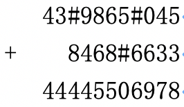
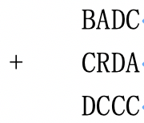

所谓虫食算，就是原先的算式中有一部分被虫子啃掉了，需要我们根据剩下的数字来判定被啃掉的字母。来看一个简单的例子：

其中 # 号代表被虫子啃掉的数字。根据算式，我们很容易判断：第一行的两个数字分别是 5 和 3，第二行的数字是 5。
现在，我们对问题做两个限制：
首先，我们只考虑加法的虫食算。这里的加法是 $N$ 进制加法，算式中三个数都有 $N$ 位，允许有前导的 0。
其次，虫子把所有的数都啃光了，我们只知道哪些数字是相同的，我们将相同的数字用相同的字母表示，不同的数字用不同的字母表示。如果这个算式是 $N$ 进制的，我们就取英文字母表午的前 $N$ 个大写字母来表示这个算式中的 $0$ 到 $N-1$ 这 $N$ 个不同的数字：但是这 $N$ 个字母并不一定顺序地代表 $0$ 到 $N-1$)。输入数据保证 $N$ 个字母分别至少出现一次。

上面的算式是一个 $4$ 进制的算式。很显然，我们只要让 $ABCD$ 分别代表 $0123$，便可以让这个式子成立了。你的任务是，对于给定的 $N$ 进制加法算式，求出 $N$ 个不同的字母分别代表的数字，使得该加法算式成立。输入数据保证有且仅有一组解。
 Comet OJ
Comet OJ